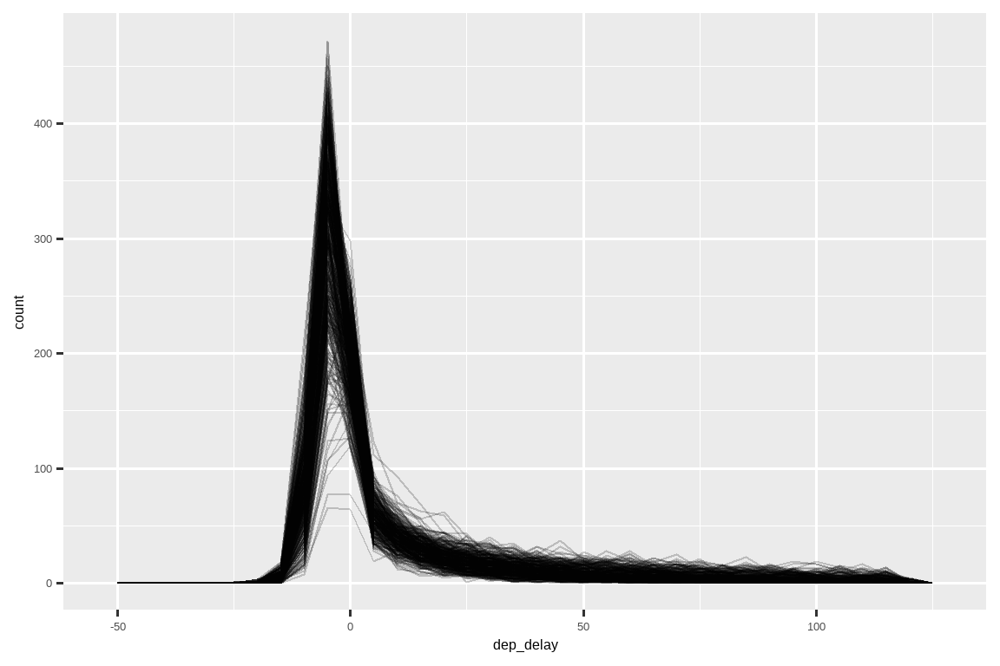

13 数值
13.1 引言
数值向量是数据科学的支柱，在本书的前面部分你已经多次使用过它们。现在是时候系统地审视一下在 R 中你能用它们做什么，以确保你能够很好地应对未来任何涉及数值向量的问题。
我们将首先为你提供一些工具，以便在你有字符串的情况下创建数值，然后更详细地介绍 count()。接着，我们将深入探讨与 mutate() 搭配使用的各种数值转换，包括那些可以应用于其他类型向量但常用于数值向量的更通用的转换。最后，我们将介绍与 summarize() 搭配使用的汇总函数，并向你展示它们如何也能与 mutate() 一起使用。
13.1.1 先决条件
本章主要使用 R base 中的函数，这些函数无需加载任何包即可使用。但我们仍然需要 tidyverse，因为我们将在 mutate() 和 filter() 等 tidyverse 函数内部使用这些 R base 函数。与上一章一样，我们将使用 nycflights13 中的真实示例，以及用 c() 和 tribble() 创建的玩具示例。
13.2 创建数值
在大多数情况下，你得到的数值已经是 R 的数值类型之一：整数（integer）或双精度浮点数（double）。然而，在某些情况下，你会遇到以字符串形式存在的数值，这可能是因为你通过列标题进行透视操作创建了它们，或者是在数据导入过程中出了问题。
readr 提供了两个有用的函数来将字符串解析为数值：parse_double() 和 parse_number()。当你有名为字符串的数字时，使用 parse_double()：
x <- c("1.2", "5.6", "1e3")
parse_double(x)
#> [1] 1.2 5.6 1000.0当字符串中包含你想要忽略的非数值文本时，使用 parse_number()。这对于处理货币数据和百分比特别有用：
x <- c("$1,234", "USD 3,513", "59%")
parse_number(x)
#> [1] 1234 3513 5913.3 计数
仅凭计数和一些基本算术就能完成如此多的数据科学工作，这着实令人惊讶，因此 dplyr 致力于通过 count() 使计数尽可能简单。这个函数非常适合在分析过程中进行快速探索和检查：
flights |> count(dest)
#> # A tibble: 105 × 2
#> dest n
#> <chr> <int>
#> 1 ABQ 254
#> 2 ACK 265
#> 3 ALB 439
#> 4 ANC 8
#> 5 ATL 17215
#> 6 AUS 2439
#> # ℹ 99 more rows（尽管在 Chapter 4 中有相关建议，我们通常将 count() 写在单行上，因为它通常在控制台中使用，用于快速检查计算是否按预期工作。）
如果你想查看最常见的值，可以添加 sort = TRUE：
flights |> count(dest, sort = TRUE)
#> # A tibble: 105 × 2
#> dest n
#> <chr> <int>
#> 1 ORD 17283
#> 2 ATL 17215
#> 3 LAX 16174
#> 4 BOS 15508
#> 5 MCO 14082
#> 6 CLT 14064
#> # ℹ 99 more rows请记住，如果你想查看所有值，可以使用 |> View() 或 |> print(n = Inf)。
你可以使用 group_by()、summarize() 和 n() 来“手动”执行相同的计算。这很有用，因为它允许你同时计算其他汇总统计量：
n() 是一个特殊的汇总函数，它不接受任何参数，而是访问关于“当前”组的信息。这意味着它只能在 dplyr 的动词（verb）内部工作：
n()
#> Error in `n()`:
#> ! Must only be used inside data-masking verbs like `mutate()`,
#> `filter()`, and `group_by()`.-
n_distinct(x)计算一个或多个变量的不同（唯一）值的数量。例如，我们可以找出哪些目的地由最多的航空公司提供服务：flights |> group_by(dest) |> summarize(carriers = n_distinct(carrier)) |> arrange(desc(carriers)) #> # A tibble: 105 × 2 #> dest carriers #> <chr> <int> #> 1 ATL 7 #> 2 BOS 7 #> 3 CLT 7 #> 4 ORD 7 #> 5 TPA 7 #> 6 AUS 6 #> # ℹ 99 more rows -
加权计数就是求和。例如，你可以“计算”每架飞机飞行的总英里数：
加权计数是一个常见的问题，所以
count()有一个wt参数可以做同样的事情：flights |> count(tailnum, wt = distance) -
你可以通过组合
sum()和is.na()来计算缺失值的数量。在flights数据集中，这代表了被取消的航班：
13.3.1 练习
- 你如何使用
count()来计算给定变量中含有缺失值的行数？ - 将以下
count()调用展开，改用group_by()、summarize()和arrange()来实现：flights |> count(dest, sort = TRUE)flights |> count(tailnum, wt = distance)
13.4 数值转换
转换函数与 mutate() 配合得很好，因为它们的输出与输入长度相同。绝大多数转换函数已经内置于 R base 中。列出所有这些函数是不切实际的，所以本节将展示最有用的那些。例如，虽然 R 提供了你可能梦想到的所有三角函数，但我们在这里不列出它们，因为它们在数据科学中很少需要。
13.4.1 算术和循环补齐规则
我们在 Chapter 2 中介绍了算术（+, -, *, /, ^）的基础知识，并且从那以后已经多次使用它们。这些函数不需要太多的解释，因为它们做的就是你在小学学到的东西。但是我们需要简要地谈谈循环补齐规则（recycling rules），它决定了当左右两边的长度不同时会发生什么。这对于像 flights |> mutate(air_time = air_time / 60) 这样的操作很重要，因为 / 的左边有 336,776 个数字，而右边只有一个。
R 通过循环补齐（recycling）或重复较短的向量来处理长度不匹配的问题。如果我们在数据框之外创建一些向量，我们可以更容易地看到这个操作：
通常，你只想循环补齐单个数字（即长度为 1 的向量），但 R 会循环补齐任何较短长度的向量。如果较长的向量不是较短向量的倍数，它通常（但并非总是）会给你一个警告：
这些循环补齐规则也适用于逻辑比较（==, <, <=, >, >=, !=），如果你不小心用了 == 而不是 %in%，并且数据框的行数碰巧很凑巧，可能会导致令人惊讶的结果。例如，看这段试图找出所有一月和二月航班的代码：
flights |>
filter(month == c(1, 2))
#> # A tibble: 25,977 × 19
#> year month day dep_time sched_dep_time dep_delay arr_time sched_arr_time
#> <int> <int> <int> <int> <int> <dbl> <int> <int>
#> 1 2013 1 1 517 515 2 830 819
#> 2 2013 1 1 542 540 2 923 850
#> 3 2013 1 1 554 600 -6 812 837
#> 4 2013 1 1 555 600 -5 913 854
#> 5 2013 1 1 557 600 -3 838 846
#> 6 2013 1 1 558 600 -2 849 851
#> # ℹ 25,971 more rows
#> # ℹ 11 more variables: arr_delay <dbl>, carrier <chr>, flight <int>, …这段代码运行没有错误，但它没有返回你想要的结果。由于循环补齐规则，它找到了奇数行中一月份出发的航班和偶数行中二月份出发的航班。而且不幸的是，因为 flights 的行数是偶数，所以没有警告。
为了保护你免受这种静默失败的影响，大多数 tidyverse 函数使用一种更严格的循环补齐形式，只循环补齐单个值。不幸的是，这在这里或许多其他情况下没有帮助，因为关键的计算是由 R base 函数 == 执行的，而不是 filter()。
13.4.2 最小值和最大值
算术函数处理成对的变量。两个密切相关的函数是 pmin() 和 pmax()，当给定两个或更多变量时，它们将返回每行中的最小值或最大值：
请注意，这些不同于汇总函数 min() 和 max()，后者接受多个观测值并返回单个值。当你发现所有的最小值和所有的最大值都相同时，你就知道你用错了形式：
13.4.3 模运算
模运算（Modular arithmetic）是你学会小数之前所做的那种数学的专业名称，即产生一个整数和一个余数的除法。在 R 中，%/% 进行整除，%% 计算余数：
模运算对 flights 数据集很方便，因为我们可以用它来将 sched_dep_time 变量分解为 hour 和 minute：
我们可以将其与 Section 12.4 中的 mean(is.na(x)) 技巧结合起来，看看取消航班的比例在一天中是如何变化的。结果显示在 Figure 13.1 中。
flights |>
group_by(hour = sched_dep_time %/% 100) |>
summarize(prop_cancelled = mean(is.na(dep_time)), n = n()) |>
filter(hour > 1) |>
ggplot(aes(x = hour, y = prop_cancelled)) +
geom_line(color = "grey50") +
geom_point(aes(size = n))13.4.4 对数
对数是一种非常有用的转换，用于处理跨越多个数量级的数据，并将指数增长转换为线性增长。在 R 中，你可以选择三种对数：log()（自然对数，以 e 为底）、log2()（以 2 为底）和 log10()（以 10 为底）。我们建议使用 log2() 或 log10()。log2() 很容易解释，因为对数尺度上 1 的差异对应于原始尺度上的加倍，而 -1 的差异对应于减半；而 log10() 很容易反向转换，因为（例如）3 是 10^3 = 1000。log() 的逆运算是 exp()；要计算 log2() 或 log10() 的逆运算，你需要使用 2^ 或 10^。
13.4.5 四舍五入
使用 round(x) 将一个数四舍五入到最近的整数：
round(123.456)
#> [1] 123你可以用第二个参数 digits 来控制四舍五入的精度。round(x, digits) 四舍五入到最近的 10^-n，所以 digits = 2 会四舍五入到最近的 0.01。这个定义很有用，因为它意味着 round(x, -3) 会四舍五入到最近的千位，事实也确实如此：
round() 有一个初看起来很奇怪的特性：
round() 使用的是所谓的“四舍五入到偶数”或“银行家舍入法”（Banker’s rounding）：如果一个数恰好在两个整数的中间，它将被舍入到偶数。这是一个很好的策略，因为它能保持舍入的无偏性：所有 0.5 的一半向上舍入，一半向下舍入。
round() 与 floor()（总是向下取整）和 ceiling()（总是向上取整）配对使用：
这些函数没有 digits 参数，所以你可以先缩小，再取整，然后再放大回去：
如果你想将数字 round() 到某个其他数的倍数，也可以使用同样的技术：
13.4.6 将数值切割成范围
使用 cut()1 将一个数值向量分割（即分箱）成离散的桶：
分割点不必是等距的：
你可以选择性地提供自己的 labels。注意 labels 的数量应该比 breaks 少一个。
任何超出分割点范围的值都会变成 NA：
请参阅文档以了解其他有用的参数，如 right 和 include.lowest，它们控制区间是 [a, b) 还是 (a, b]，以及最低的区间是否应为 [a, b]。
13.4.7 累积和滚动聚合
R base 提供了 cumsum()、cumprod()、cummin()、cummax() 用于运行或累积的求和、求积、最小值和最大值。dplyr 提供了 cummean() 用于累积均值。累积和在实践中最为常见：
x <- 1:10
cumsum(x)
#> [1] 1 3 6 10 15 21 28 36 45 55如果你需要更复杂的滚动或滑动聚合，可以试试 slider 包。
13.4.8 练习
用语言解释用于生成 Figure 13.1 的代码每一行都在做什么。
R 提供了哪些三角函数？猜一些名字并查阅文档。它们是使用度还是弧度？
-
目前
dep_time和sched_dep_time便于查看，但难以进行计算，因为它们并不是真正的连续数值。你可以通过运行下面的代码看到基本问题：每个小时之间都存在一个间隙。flights |> filter(month == 1, day == 1) |> ggplot(aes(x = sched_dep_time, y = dep_delay)) + geom_point()将它们转换为更真实的时间表示（可以是小数小时或自午夜以来的分钟数）。
将
dep_time和arr_time四舍五入到最近的五分钟。
13.5 通用转换
以下各节描述了一些通常用于数值向量但也适用于所有其他列类型的通用转换。
13.5.1 排名
dplyr 提供了许多受 SQL 启发的排名函数，但你应始终从 dplyr::min_rank() 开始。它使用处理并列名次的典型方法，例如，第 1 名、第 2 名、第 2 名、第 4 名。
注意，最小值获得最低的排名；使用 desc(x) 可以让最大值获得最低的排名：
如果 min_rank() 不能满足你的需求，可以看看它的变体 dplyr::row_number()、dplyr::dense_rank()、dplyr::percent_rank() 和 dplyr::cume_dist()。详情请参阅文档。
df <- tibble(x = x)
df |>
mutate(
row_number = row_number(x),
dense_rank = dense_rank(x),
percent_rank = percent_rank(x),
cume_dist = cume_dist(x)
)
#> # A tibble: 6 × 5
#> x row_number dense_rank percent_rank cume_dist
#> <dbl> <int> <int> <dbl> <dbl>
#> 1 1 1 1 0 0.2
#> 2 2 2 2 0.25 0.6
#> 3 2 3 2 0.25 0.6
#> 4 3 4 3 0.75 0.8
#> 5 4 5 4 1 1
#> 6 NA NA NA NA NA你可以通过为 R base 的 rank() 函数选择合适的 ties.method 参数来达到许多相同的结果；你可能还想设置 na.last = "keep" 以将 NA 保留为 NA。
row_number() 也可以在 dplyr 动词内部不带任何参数使用。在这种情况下，它会给出“当前”行的行号。当与 %% 或 %/% 结合使用时，这可以成为将数据分成大小相似的组的有用工具：
df <- tibble(id = 1:10)
df |>
mutate(
row0 = row_number() - 1,
three_groups = row0 %% 3,
three_in_each_group = row0 %/% 3
)
#> # A tibble: 10 × 4
#> id row0 three_groups three_in_each_group
#> <int> <dbl> <dbl> <dbl>
#> 1 1 0 0 0
#> 2 2 1 1 0
#> 3 3 2 2 0
#> 4 4 3 0 1
#> 5 5 4 1 1
#> 6 6 5 2 1
#> # ℹ 4 more rows13.5.2 偏移
dplyr::lead() 和 dplyr::lag() 允许你引用“当前”值之前或之后的值。它们返回一个与输入长度相同的向量，在开头或结尾用 NA 填充：
-
x - lag(x)给出当前值与前一个值之间的差值。x - lag(x) #> [1] NA 3 6 0 8 16 -
x == lag(x)告诉你当前值何时发生变化。x == lag(x) #> [1] NA FALSE FALSE TRUE FALSE FALSE
你可以通过使用第二个参数 n 来向前或向后偏移超过一个位置。
13.5.3 连续标识符
有时你希望在每次某个事件发生时开始一个新的组。例如，在查看网站数据时，通常希望将事件分成会话（session），即在距离上次活动超过 x 分钟的间隙后开始一个新的会话。例如，假设你有一个人访问网站的时间记录：
并且你已经计算了每个事件之间的时间，并判断是否存在足够大的间隙：
但是我们如何从那个逻辑向量得到一个可以用于 group_by() 的东西呢？来自 Section 13.4.7 的 cumsum() 派上了用场，因为间隙，即 has_gap 为 TRUE时，会将 group 增加一（Section 12.4.2）：
另一种创建分组变量的方法是 consecutive_id()，它在每次其参数之一发生变化时开始一个新组。例如，受 这个 Stack Overflow 问题 的启发，假设你有一个包含大量重复值的数据框：
如果你想保留每个重复的 x 的第一行，你可以使用 group_by()、consecutive_id() 和 slice_head()：
df |>
group_by(id = consecutive_id(x)) |>
slice_head(n = 1)
#> # A tibble: 7 × 3
#> # Groups: id [7]
#> x y id
#> <chr> <dbl> <int>
#> 1 a 1 1
#> 2 b 2 2
#> 3 c 4 3
#> 4 d 3 4
#> 5 e 9 5
#> 6 a 4 6
#> # ℹ 1 more row13.5.4 练习
使用排名函数找出延误最严重的 10 个航班。你希望如何处理并列排名？仔细阅读
min_rank()的文档。哪架飞机（
tailnum）的准点记录最差？如果你想尽可能避免延误，应该在一天中的什么时间飞行？
flights |> group_by(dest) |> filter(row_number() < 4)会做什么？flights |> group_by(dest) |> filter(row_number(dep_delay) < 4)又会做什么？对于每个目的地，计算总的延误分钟数。对于每个航班，计算其延误占其目的地总延误的比例。
-
延误通常在时间上是相关的：即使导致初始延误的问题已经解决，后续的航班也会被延误，以便让较早的航班先行离开。使用
lag()，探讨一个小时的平均航班延误与前一个小时的平均延误之间的关系。 查看每个目的地。你能找到飞行速度可疑的航班吗（即可能代表数据输入错误的航班）？计算一个航班的飞行时间相对于到该目的地的最短飞行时间的比例。哪些航班在空中延误最严重？
找出所有由至少两家航空公司执飞的目的地。使用这些目的地，根据它们在同一目的地的表现，为航空公司创建一个相对排名。
13.6 数值汇总
仅使用我们已经介绍过的计数、均值和总和就可以让你走得很远，但 R 提供了许多其他有用的汇总函数。这里是一些你可能会觉得有用的选择。
13.6.1 中心位置
到目前为止，我们主要使用 mean() 来概括一个数值向量的中心位置。正如我们在 Section 3.6 中看到的，因为均值是总和除以计数，所以它对少数异常高或低的值很敏感。一个替代方法是使用 median()，它找到一个位于向量“中间”的值，即 50% 的值在它之上，50% 的值在它之下。根据你感兴趣的变量的分布形状，均值或中位数可能是衡量中心位置的更好指标。例如，对于对称分布，我们通常报告均值，而对于偏态分布，我们通常报告中位数。
Figure 13.2 比较了每个目的地出发延误（分钟）的均值与中位数。中位数延误总是小于均值延误，因为航班有时会晚点数小时，但从不会提早数小时出发。
flights |>
group_by(year, month, day) |>
summarize(
mean = mean(dep_delay, na.rm = TRUE),
median = median(dep_delay, na.rm = TRUE),
n = n(),
.groups = "drop"
) |>
ggplot(aes(x = mean, y = median)) +
geom_abline(slope = 1, intercept = 0, color = "white", linewidth = 2) +
geom_point()你可能也想知道众数（mode），即最常见的值。这是一个只在非常简单的情况下才好用的汇总统计量（这可能是你在高中学到它的原因），但它对许多真实数据集效果不佳。如果数据是离散的，可能会有多个最常见的值；如果数据是连续的，可能根本没有最常见的值，因为每个值都略有不同。由于这些原因，统计学家倾向于不使用众数，R base 中也没有包含众数函数2。
13.6.2 最小值、最大值和分位数
如果你感兴趣的不是中心位置呢？min() 和 max() 会给你最大值和最小值。另一个强大的工具是 quantile()，它是中位数的推广：quantile(x, 0.25) 会找到 x 中大于 25% 值的值，quantile(x, 0.5) 等同于中位数，而 quantile(x, 0.95) 会找到大于 95% 值的值。
对于 flights 数据，你可能想查看延误的 95% 分位数，而不是最大值，因为它会忽略那 5% 最为极端的延误航班。
flights |>
group_by(year, month, day) |>
summarize(
max = max(dep_delay, na.rm = TRUE),
q95 = quantile(dep_delay, 0.95, na.rm = TRUE),
.groups = "drop"
)
#> # A tibble: 365 × 5
#> year month day max q95
#> <int> <int> <int> <dbl> <dbl>
#> 1 2013 1 1 853 70.1
#> 2 2013 1 2 379 85
#> 3 2013 1 3 291 68
#> 4 2013 1 4 288 60
#> 5 2013 1 5 327 41
#> 6 2013 1 6 202 51
#> # ℹ 359 more rows13.6.3 离散程度
有时你不太关心数据的主体在哪里，而是关心它是如何分布的。两个常用的汇总统计量是标准差 sd(x) 和四分位距 IQR()。我们在这里不解释 sd()，因为你可能已经熟悉它了，但 IQR() 可能对你来说是新的——它是 quantile(x, 0.75) - quantile(x, 0.25)，并告诉你包含中间 50% 数据的范围。
我们可以用它来揭示 flights 数据中的一个小小的奇特之处。你可能期望始发地和目的地之间的距离离散程度为零，因为机场总是在同一个地方。但下面的代码揭示了机场 EGE 的一个数据奇特之处：
13.6.4 分布
值得记住的是，上面描述的所有汇总统计量都是将分布简化为单个数字的一种方式。这意味着它们从根本上是简化的，如果你选择了错误的汇总统计量，你很容易会忽略组间的重要差异。这就是为什么在确定你的汇总统计量之前，总是先将分布可视化是一个好主意。
Figure 13.3 显示了出发延误的总体分布。分布非常偏斜，以至于我们必须放大才能看到数据的主体部分。这表明均值不太可能是一个好的汇总指标，我们可能更倾向于使用中位数。
检查子组的分布是否与整体相似也是一个好主意。在下面的图中，叠加了 365 个 dep_delay 的频率多边形图，每天一个。这些分布似乎遵循一个共同的模式，这表明对每天使用相同的汇总统计量是可以的。
flights |>
filter(dep_delay < 120) |>
ggplot(aes(x = dep_delay, group = interaction(day, month))) +
geom_freqpoly(binwidth = 5, alpha = 1/5)
不要害怕探索专门为你正在处理的数据量身定制的自定义汇总。在这种情况下，这可能意味着分别汇总提早出发的航班和晚点出发的航班，或者鉴于数值偏斜严重，你可能会尝试对数转换。最后，不要忘记你在 Section 3.6 中学到的：在创建数值汇总时，最好包含每个组中的观测数量。
13.6.5 位置
还有最后一种对数值向量很有用，但也适用于所有其他类型值的汇总：提取特定位置的值：first(x)、last(x) 和 nth(x, n)。
例如，我们可以找到每天的第一次、第五次和最后一次出发：
flights |>
group_by(year, month, day) |>
summarize(
first_dep = first(dep_time, na_rm = TRUE),
fifth_dep = nth(dep_time, 5, na_rm = TRUE),
last_dep = last(dep_time, na_rm = TRUE)
)
#> `summarise()` has grouped output by 'year', 'month'. You can override using
#> the `.groups` argument.
#> # A tibble: 365 × 6
#> # Groups: year, month [12]
#> year month day first_dep fifth_dep last_dep
#> <int> <int> <int> <int> <int> <int>
#> 1 2013 1 1 517 554 2356
#> 2 2013 1 2 42 535 2354
#> 3 2013 1 3 32 520 2349
#> 4 2013 1 4 25 531 2358
#> 5 2013 1 5 14 534 2357
#> 6 2013 1 6 16 555 2355
#> # ℹ 359 more rows（注意：因为 dplyr 函数使用 _ 来分隔函数和参数名称的组成部分，所以这些函数使用 na_rm 而不是 na.rm。）
如果你熟悉 [（我们将在 Section 27.2 中回过头来讨论），你可能会想知道你是否真的需要这些函数。有三个原因：default 参数允许你在指定位置不存在时提供一个默认值，order_by 参数允许你局部覆盖行的顺序，而 na_rm 参数允许你删除缺失值。
提取位置上的值与按排名筛选是互补的。筛选会给你所有的变量，每个观测值占一行：
flights |>
group_by(year, month, day) |>
mutate(r = min_rank(sched_dep_time)) |>
filter(r %in% c(1, max(r)))
#> # A tibble: 1,195 × 20
#> # Groups: year, month, day [365]
#> year month day dep_time sched_dep_time dep_delay arr_time sched_arr_time
#> <int> <int> <int> <int> <int> <dbl> <int> <int>
#> 1 2013 1 1 517 515 2 830 819
#> 2 2013 1 1 2353 2359 -6 425 445
#> 3 2013 1 1 2353 2359 -6 418 442
#> 4 2013 1 1 2356 2359 -3 425 437
#> 5 2013 1 2 42 2359 43 518 442
#> 6 2013 1 2 458 500 -2 703 650
#> # ℹ 1,189 more rows
#> # ℹ 12 more variables: arr_delay <dbl>, carrier <chr>, flight <int>, …
13.6.6 与 mutate() 结合使用
顾名思义，汇总函数通常与 summarize() 配对使用。然而，由于我们在 Section 13.4.1 中讨论的循环补齐规则，它们也可以与 mutate() 有效地配对使用，特别是当你想要进行某种分组标准化时。例如：
-
x / sum(x)计算占总数的比例。 -
(x - mean(x)) / sd(x)计算一个 Z 分数（标准化为均值为 0，标准差为 1）。 -
(x - min(x)) / (max(x) - min(x))标准化到 [0, 1] 的范围。 -
x / first(x)计算一个基于第一个观测值的指数。
13.6.7 练习
13.7 总结
你已经熟悉了许多处理数值的工具，在阅读本章后，你现在知道如何在 R 中使用它们。你还学到了一些有用的通用转换，这些转换通常（但不仅限于）应用于数值向量，如排名和偏移。最后，你详细研究了一些数值汇总方法，并讨论了你应该考虑的一些统计挑战。
在接下来的两章中，我们将深入探讨使用 stringr 包处理字符串。字符串是一个很大的主题，所以它们占了两章，一章是关于字符串的基础知识，另一章是关于正则表达式。
ggplot2 在
cut_interval()、cut_number()和cut_width()中为常见情况提供了一些辅助函数。承认 ggplot2 是这些函数存在的一个奇怪的地方，但它们作为直方图计算的一部分很有用，并且在 tidyverse 的任何其他部分存在之前就已经编写好了。↩︎